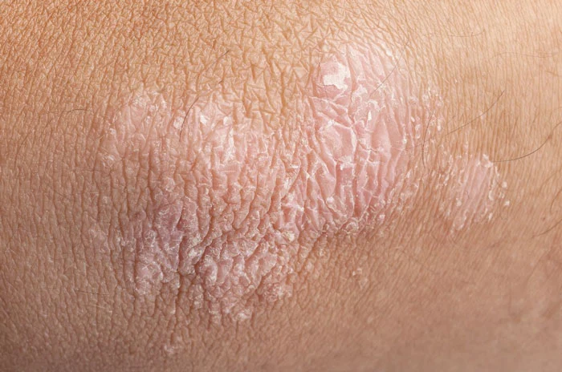

Dry hands and rough elbows: practical everyday care
Everyday care for dry hands and rough elbows, choosing a moisturizer, and when cracks or irritation need professional advice.

Frequent washing, working with your hands and contact with cleaning products can leave a rough feeling. Elbows may need their own care, particularly when everyday activities involve friction. The aim is a simple habit you can maintain.
Start by noticing repeated exposure
Consider when discomfort is most noticeable: after work, washing or time in the cold. A cosmetic does not replace suitable protective gloves or workplace hygiene. Follow safety instructions when handling chemicals.
Build a small routine beside the sink
The American Academy of Dermatology recommends moisturizer after washing for dry hands. Dry gently and apply a suitable product according to its label. Practicality matters: a tube kept within reach is easier to make part of your day.
- Keep skincare products separate from cleaning chemicals.
- Use clean hands or a clean tool when taking product from a jar.
- Notice whether a new product stings or makes discomfort worse, and stop using it if it does.
How do you choose a texture?
Cream, ointment and balm are not interchangeable names for one formula. Compare the intended use and how comfortably the product fits into your day. The terms natural and preservative-free do not, by themselves, establish safety.
A fatty base containing tallow or jojoba oil may offer a rich, emollient feel in an appropriate formulation. It does not establish that cracks will heal, or that a face product has also been assessed for use on hands.
What is different about elbows?
Reduce unnecessary friction instead of responding to roughness with aggressive scrubbing. Choose a product with directions appropriate to the area and follow them. A larger amount or a thick overnight layer is not automatically the right approach.
When the skin is cracked
Deep cracks, bleeding, persistent pain or a spreading rash need medical advice. A cosmetic is not treatment for dermatitis or an injury. Avoid trying unfamiliar products on open or significantly irritated skin.
Frequently asked questions
Can I use any face balm on my hands?
Check the intended uses on its label. PRIMAL CORE is being developed as a face balm; other uses and final directions have not been established.
Do I need to replace my entire routine?
No. Start with a consistent habit your skin tolerates and observe the response. Seek individual advice if dryness continues.
Sources and further reading
- American Academy of Dermatology — Dry hands and handwashing
- FDA — Ingredient origin and cosmetic safety
Read next
- Dry skin in men during winter: a simple care guide
- PRIMAL CORE ingredients: what is known and what is still being finalized
- Beef tallow for the face: a guide to tallow balm
General cosmetic-care information, not diagnosis or treatment. Suitability depends on the finished product and its directions.